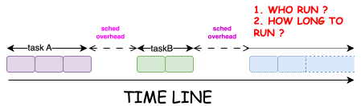
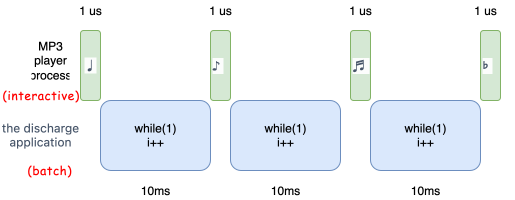
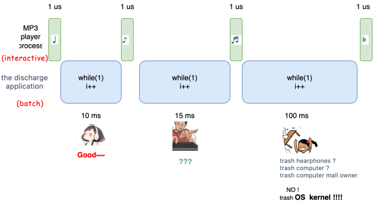
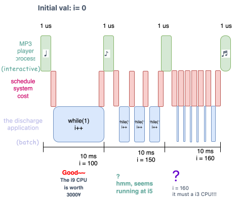

schedule: overflow
调度子系统的任务:
调度程序负责决定运行哪个程序，该程序运行多长时间。
调度系统的责任很明确, 需要在不富裕的CPU上，合理的运行所有程序。目前的cpu架构决定, 在一个core上, 同一时间只能有一个task运行, 所以调度子系统会决定当前cpu运行某个进 程，并且让其他进程等待, 在合适的时机，将cpu上的进程调出，运行下一个合适的进程， 依次循环。

所以调度系统是建立在多任务的基础上构建, 我们可以设想下, 如果将来某一天，体系架构 从根本上变了, – CPU >> task number, Linus本人可能要执行rm -rf kernel/sched。
schedule system type
而这种多任务的调度系统分为两类:
- 非抢占式
- 抢占式
非抢占式是指在前一个任务未主动退出之前，调度子系统不会将另一个该任务踢出，运行另 一个任务。而我们日常生活中用到的OS都是抢占式(windows,linux,mac os)。这种调度系统 会在进程正在运行时，打断该程序运行，调度另一个task到运行。由于本篇文章主要介绍 Linux调度系统，所以，下文中调度均指抢占式调度。
质量
而衡量一个调度系统的质量，往往有两个:
- 效率
- 合理
效率是指, 调度子系统本身所占用的cpu时间尽可能的少。而合理就是要满足目前的task 运 行需求，或者说计算场景。前一个指标好理解可以定量，而后一个指标却是主观的。所以， 向linux这种通用的操作系统需要满足用户绝大部分的需求。
我们来简单举个例子:

当前CPU上运行两个程序:
- MP3 player: 用于听歌
- 非常简单的死循环程序: 单纯用于费电…
MP3程序的需求是每个10ms调度其一次，调度频率越稳定，其产生的音乐越稳定. 而”费电”程序 只有一个原则, 尽量占用CPU, 让电脑的电量下降更快。
那如果, 调度器不能按照这些程序的需求执行呢?

那将导致让人非常恼火的卡顿，一度认为是电脑城老板的原因。
而我们再举一个比较极端的例子:

为了保证mp3 player 的低调度延迟, 在后续调整了调度策略，将调度点 设置的很密集，因为调度器本身有性能损耗，导致挤压了放电程序的运行 时间，从而导致性能降低。
所以调度器总是会遇到各种各样的需求，但是总结来说，大部分的任务可以 分为以下两类:
任务种类
开发者们根据这些task 运行需求大致分为两类:
batch process:
大部分时间运行一些计算指令，不和外围设备交互。
interactive process:
这种类型的task 实际的运行时间较少，往往在执行一段时间后，会主动的调度走, 然后 进行较长时间等待。这段时间内, task 将无需调度回来，只有当其等待的事件完成后， 才有必要继续运行。
我们以上个章节提到的两个任务为例:
费电程序，其代码一直执行死循环。其关注的是当前机器的费电效率，也就是吞吐。而由于 调度所执行的上下文切换会带来性能损失(例如 flush tlb, cache replacement, 以及调度 器本身的cost), 所以调度策略往往是尽量降低其调度频率。
而像MP3 player, 其执行完”输出某个音符到设备后”, 主动让出调度，然后等待 10ms， 再输出另外一个音符。其希望每隔10ms + 1 us，精准调度到该进程。其关注的是是调度 延迟，所以调度策略往往是增加调度点。
不幸的是，自古鱼和熊掌不可兼得。降低延迟和增加吞吐本身就是矛盾的。降低延迟往往意 味着增加调度点check，或者更加频繁的调度来满足低延迟的需求，但是这样必然会降低 整体性能，而降低吞吐。调度器需要在两者之间做平衡。
另外，我们往往不能预测某个程序的究竟是哪种类型。例如一个数据库程序，其可能会执行 某个排序算法大量消耗cpu，也可能在执行writeback 触发大量IO … 这时，需要调度系统 更采用更”合理”的调度策略。
Linux 调度系统概念
我们再次回顾调度器的职责:
- 运行哪个进程
- 运行该进程多长时间
Linux 通过为每个进程定义
优先级用于辅助调度器决策运行哪个进程
通过为每个进程分配
时间片来决定 该进程在被调度后运行多长时间. 接下来我们分别看下这两个概念
NOTE
在引入CFS后, 将时间片的概念移除，取而代之的是vruntime的概念.
优先级
调度算法中最基本的一类是基于优先级的调度1. 更高的优先级 不仅让调度系统优先调度, 并且其使用的时间片也更长.
而Linux分为两种不同的优先级范围:
| 名称 | 范围 | 值和优先级关系 | 适用进程 |
|---|---|---|---|
| nice | [-20,20) | 值越小，优先级越大 | 普通进程 |
| 实时优先级 | [0, 99] | 值越大，优先级越大 | 实时进程 |
另外上述描述的是静态优先级，用户可以通过内核接口进行配置。除此之外，内核会在静态 优先级的基础上, 根据当前的上下文计算动态优先级。举个例子, 当发现当前进程切换无需 flush tlb(例如: 用户进程切内核线程， 或者同一个进程的两个线程切换），可以将优先 级稍微拉高，提升被调度的概率。
我们将在描述 Linux schedule 历史演进中的具体的调度算法时，详细介绍下每个调度器 的动态优先级计算。
时间片
时间片表明进程在被抢占时所占用的时间1. 调度策略必须规定一个默认的时间 片，即使是CFS这样淡化时间片的调度算法也是同样。但是时间片的设置策略会大大影响调度器 的行为:
- 设置过大: 导致系统调度延迟过高
- 设置过小: 导致系统吞吐减少
所以, 科学的划分时间片是调度系统非常重要的优化点之一。而我们后续讲到的cfs，通过定义 调度延迟和最小时间片，来根据系统负载动态分配时间片。